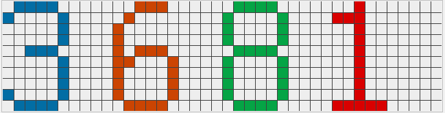

基于相同颜色连通像素个数的统计进行图像字符识别
问题: 对如下图中的字符进行识别:
- 样本:
解题思路:
- 无论是图像，音频的识别，不外乎是对各种特征(特征向量)进行统计归纳。
- 放大后的样本:
- 通过观察，发现这是一张简单的，非常有规律可循的图。 越有规律越容易进行分类。这里的思路就是自左至右依次对相同颜色的像素连通区进行像素个数统计，从而制成像素与字符对应的字典进行识别。
局限性及应对措施:
- 此种方法只针对’少量的’，’简单的‘字符图形。若字符种类过多，容易造成不同像素个数冲突的问题。
- 针对冲突问题，一种有限的解决办法即针对’不同’的特征，进行二次验证。
python实现:
1
2
3
4
5
6
7
8
9
10
11
12
13
14
15
16
17
18
19
20
21
22
23
24
25
26
27
28
29
30
31
32
33
34
35
36
37
38
39
40
41
42
43
44
45
46
47
48
49
50
51
52
53
54
55
56
57
58
59
60
61
62
63
64
65from PIL import Image
import numpy as np
class dfs_simple_digital_chacpt(object):
def __init__(self, path):
self.white = [238, 238, 238]
self.row_num = 10
self.col_num = 40
self.walked_set = set()
self.roming_set = set()
self.dfs_num = 0
im = Image.open(path)
self.image_array = np.array(im).tolist()
def dfs(self, x, y, rgb):
'''
desc:用递归实现搜索范围内相同rgb值的像素
:param x:
:param y:
:param char:
:return:
'''
self.roming_set.add(tuple([x, y]))
if 0 > x or 0 > y or x >= self.row_num or y >= self.col_num: # 越界检查
return
if tuple([x,y]) in self.walked_set: # 重复遍历检查
return
if rgb != self.image_array[x][y]: # 目标rgb值检查
return
self.walked_set.add(tuple([x, y]))
self.dfs(x + 1, y, rgb) # x
self.dfs(x, y + 1, rgb) # y
self.dfs(x - 1, y, rgb) # -x
self.dfs(x, y - 1, rgb) # -y
self.dfs(x + 1, y + 1, rgb) # Ⅰ
self.dfs(x + 1, y - 1, rgb) # Ⅱ
self.dfs(x - 1, y - 1, rgb) # Ⅲ
self.dfs(x - 1, y + 1, rgb) # Ⅳ
return
def walk(self):
'''
desc:
:return:
'''
for y in range(self.col_num):
for x in range(self.row_num):
rgb = self.image_array[x][y]
if tuple([x, y]) in self.roming_set:
continue
if rgb != self.white:
self.dfs(x, y, rgb)
num = len(self.walked_set)
print(num)
self.walked_set.clear()
self.roming_set.clear()
if __name__ == '__main__':
path = ''
c = dfs_simple_digital_chacpt(path)
dfs_num = c.walk()